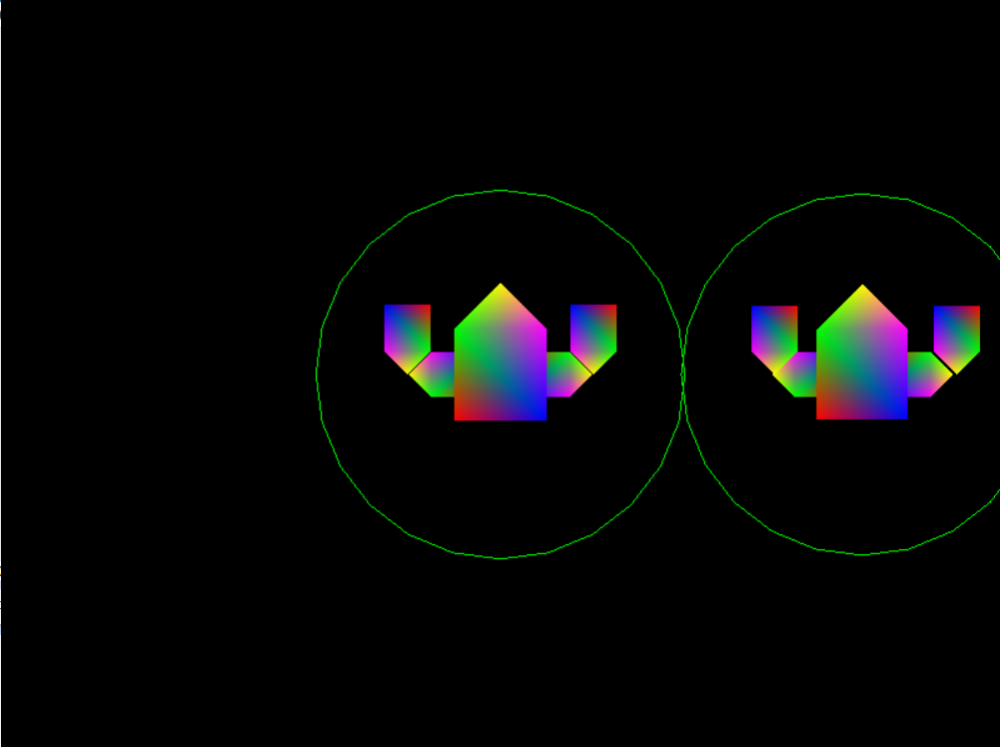
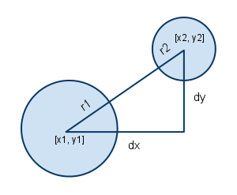
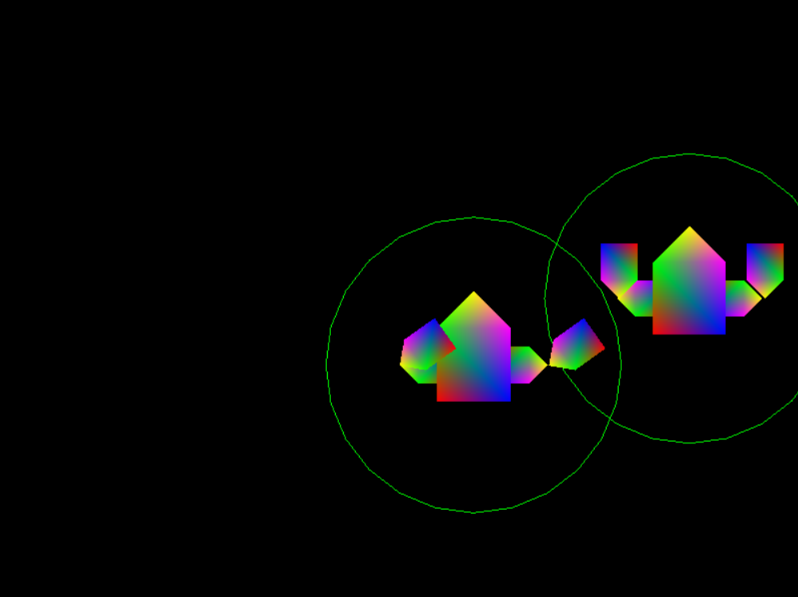
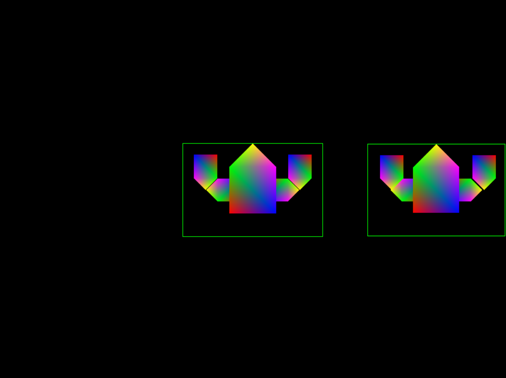
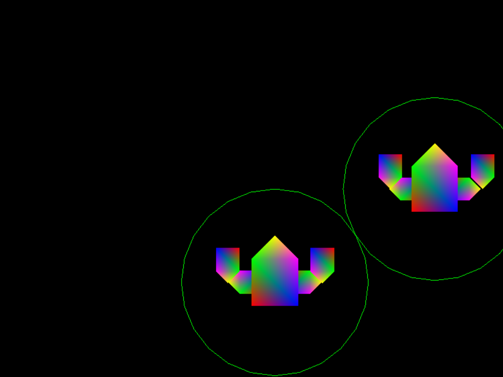
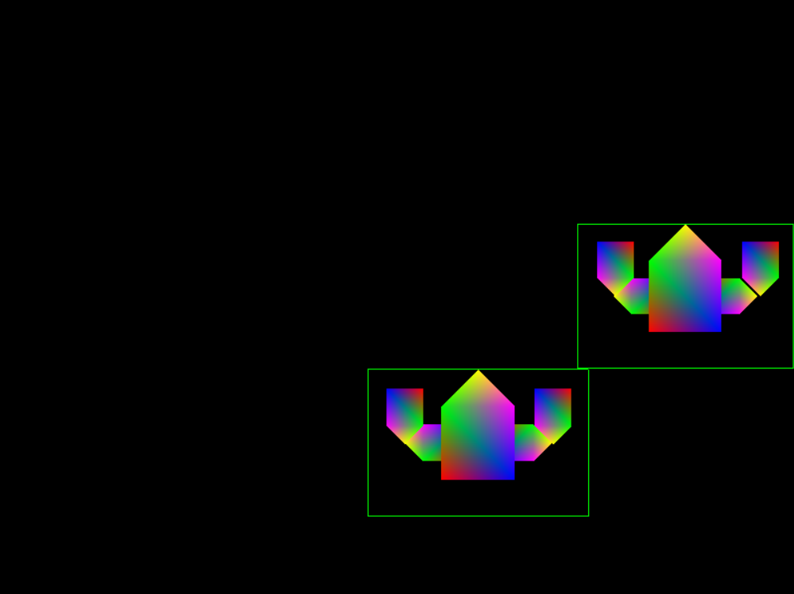

COMP 2501 - Winter 2014 Tutorial #4
Collision Detection
Description:
The purpose of this tutorial is to familiarize yourself with collisions of objects in 2D space.
To get credit for the tutorial you must complete, or make significant progress, on the problems provided and demonstrate your results to the tutorial TA.
If you cannot complete the tutorial in the time allotted you may demonstrate the completed results to the TA during their office hours.
These tutorials are based on the Rastertek set of tutorials.
Instructions:
Overview
Open Microsoft Visual Studio 2012 and open the project found in the tutorial4 folder. Run the project (hit F5), it should build and open a window containing two robots, with circles drawn around them. One of the robots is controllable by the player using the arrow keys.

There have been a number of changes to the code since tutorial 3. Notice the following code in the System class:
// Create collision manager
m_Collisions = new CollisionManager();
// Create the robot
m_Robot = new Robot(XMFLOAT3(0.0f,0.0f,-0.2f), "circle");
m_Robot->Initialize();
// Create enemy robot
m_EnemyRobot = new Robot(XMFLOAT3(4.0f, 0.0f, 0.0f), "circle");
m_EnemyRobot->Initialize();
We are now creating two robots in our system. Notice we now specify a starting position, as well as a "boundaryType". The boundary type of the robot determines how it collides with other robots.
The other thing to notice here is that our system now maintains a CollisionManager. This class is responsible for checking for collisions between the two robots. In the Frame() method we use the CollisionManager's AreColliding() method. If the two robots are colliding, our system tells the player robot to dance (move its arms about).
AreColliding(Robot* a, Robot* b) takes two pointers, each to a different robot. It then determines what kind of collision to check for, "circle" or "square". The methods for determining whether a collision exists have yet to be implemented. You will be implementing them in this tutorial.
Problem 1)
Implement the "circle" collision detection algorithm.
The algorithm is quite simple. We need to determine the distance between the center point of both objects. This can be found by determining the "hypotenuse" of the right angle triangle formed between the two points, as shown in the diagram below.

Once we have the hypotenuse, we check to see if its length is less than the sum of the the radii of both objects. If it is, then the circles are necessarily intersecting. For the sake of this exercise, the "radius" of our robots will be their height.
Note: You can get the position of a robot by: robot->GetPosition(), and the x and y coordinates from robot->GetPosition().x or robot->GetPosition().y. You can get a robot's height with robot->GetHeight().
The AreColliding() method should return true if the circles are indeed intersecting. If your method works correctly, then the player robot should dance when his circle is intersecting the enemy robot's.

Problem 2)
Change each robot's boundary type to "square". To do this, simply change "circle" to "square" in our robot initialization methods in SystemClass. When you change this parameter, and run the code, the robots should look like this:

Now implement the "square" collision detection algorithm in the collision manager. This tool can help you to figure out the algorithm needed to check the intersection of two squares. Try dragging the blue square around and noticing the change of values on the top left.
Note: In the tool, the Y axis is positive in the downwards direction, in DirectX it is positive in the upwards direction.
If your algorithm is implemented correctly, the player robot will dance when its squares intersects the enemy robot's.
Problem 3)
For this problem we are going to leverage an already existing method to stop our two robots from overlapping.
Notice the MoveIfNotColliding() method in our collision manager. This method takes three parameters:
This function, as its name suggests, moves the player robot if and only if it does not result in him colliding with the enemy robot. The syntax for calling a function like this is a little confusing so here is an example of how it could be used from the system class:
m_Collisions->MoveIfNotColliding(m_Robot, m_EnemyRobot, &Robot::MoveLeft);
This code will move the player robot left it does not result in him colliding with the enemy robot. In the MoveIfNotColliding()method, you can see how we use the member function pointer.
// Move the robot
(a->*FuncPtr)();
In the case of the example function call, this is akin to calling:
a->MoveLeft();
Using this information, change code in the System class so that movements are only carried out conditionally.
Hint: Check where we are currently moving the robot, and make changes there
Run your program, if you have made the right substitutions, your robot should not be able to overlap the enemy robot using either circle or square collision detection.
